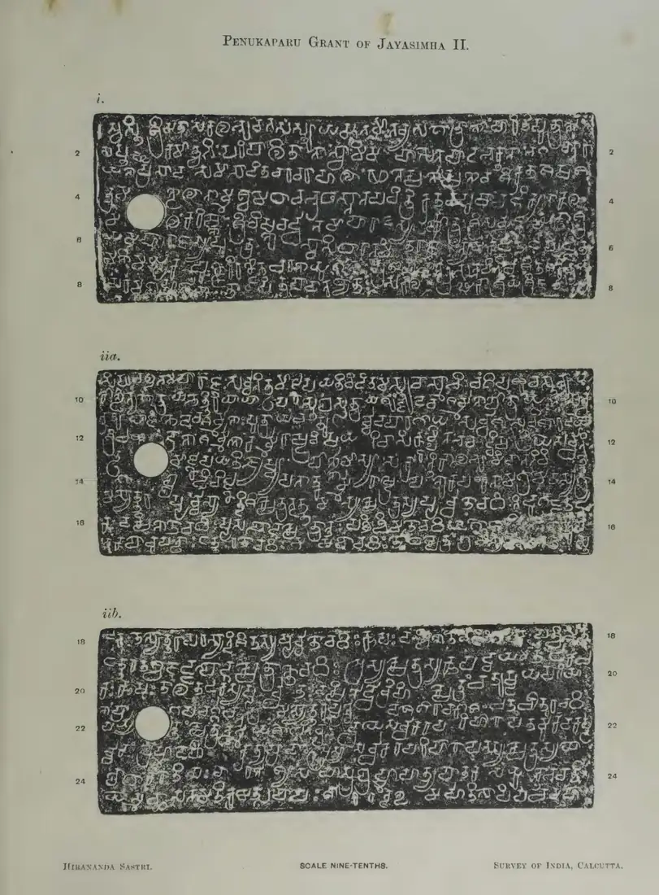
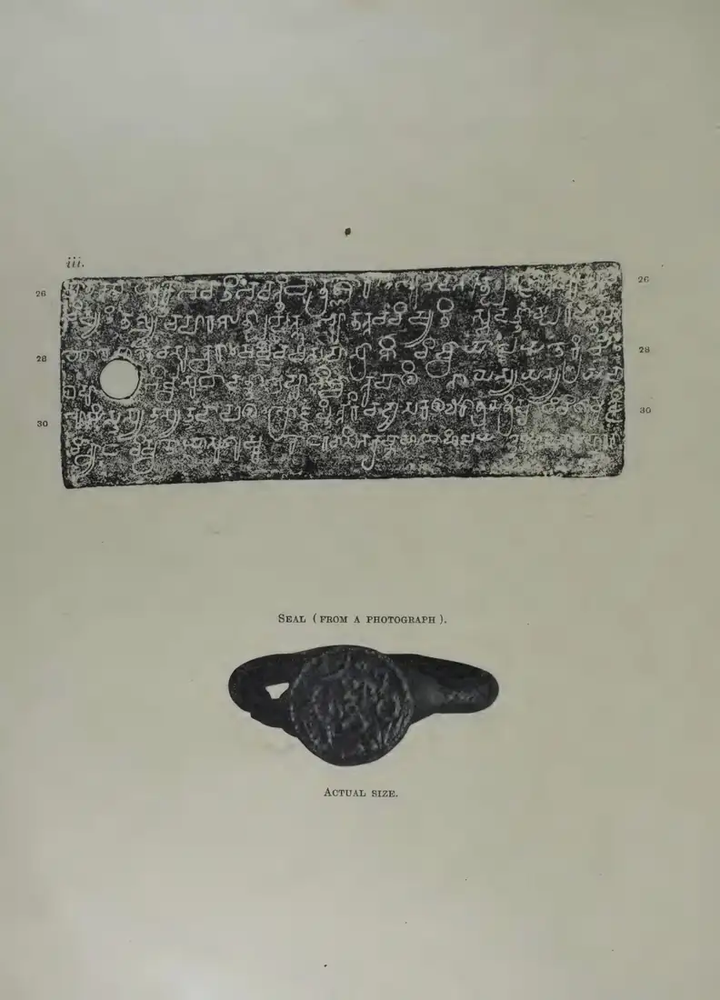
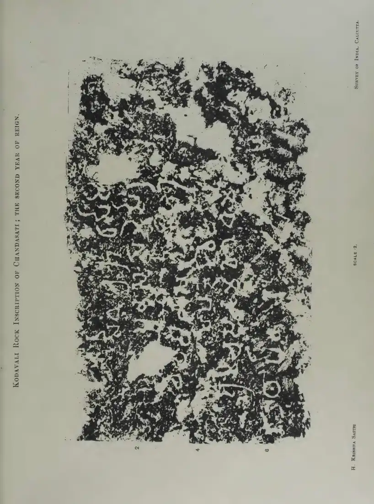

No. 34.—THE KODAVALI ROCK-INSCRIPTION OF CHANDASATI ; THE SECOND
YEAR OF REIGN.
Going in a north-westerly direction from Piṭhāpuram, a station on the East Coast Railway, for a distance of about 9 miles along the Sāmalkōṭa-Kattipūđi road, the village of Kođavali is sighted. It is situated not very far from the right side of the road. Proceeding thence for nearly two miles again in a north-westerly direction one reaches the foot of a range of hills


covered with thin forest vegetation. From here the place called “ Dhanam-dibbā ”1—‘the treasure-mound’—is reached by a gravelly foot-path running along the slope of the hill, which appears to have been once provided with steps of rubble stone. Struggling two or three furlongs along this unwelcome path we come to the crown of the hillock and to the mound ‘Dhanam-dibbā’ on it. Here are found the remains of what looks like a Buddhist stūpa consisting mostly of large-sized bricks and sometimes unhewn stone.2 On the southern side of the mound are seen also portions of a structure built of cut and dressed stone. The four rock cut wells on the south and west sides of the mound, 4 to 5 feet square and 6 to 7 feet deep, are of peculiar interest and seem to have been used once for storing water for the use of the occupants of the Buddhist monastery, as the mound may prove to be when excavations are properly carried out.
On the north wall of one of the wells on the western side of the mound measuring 5' 8½' long by 5' 5¼' broad and 7' 2' deep, is engraved in 6 lines the Āndhra inscription, edited below, in Brāhmī characters of about the 3rd century A.D. This inscription which was published in 1908 by Dr. Konow in Z. D. M. G., Vol. LXII, p. 591 f. has been noticed as No. 1341 by Dr. Lüders in his List of Brāhmī Inscriptions in Vol. X, above. As remarked by Dr. Sten Konow in the Director-General of Archæology's Annual Survey Report for 1907-08, p. 225, this is the only lithic record hitherto discovered of the Āndhra king Chaḍasāta, who is already known to us from a number of coins found in the Kistna and the Godavari districts. My friend Mr. C. R. Krishnama Aeharlu, B.A., of the Madras Epigraphical Department has also spent some hours with me in reading the inscription directly from the stone; and the text given below is the joint production of both of us. The accompanying facsimile plate is reproduced from an inked estampage prepared under my direct supervision. The inscription thus deciphered will be seen to differ much from the published text of Dr. Sten Konow. The object of the record, for instance, was not the establishment of the earth-dwelling (bhumī vesa) of an unnamed minister (āmacha), but was the establishment of the gift (dhama) of a khaṅgu (rock-cut well ?) by the minister Sasa of Khaḍdavali—the ancient form of the present village name Koḍavali.3
The name of the king occurs in l. 3 as Chaṅdasāti, the lingual d being possibly also read as a dental d. But, it is to be noted that the long vertical stem which is required to distinguish a dental d (cf. di in l. 4) is missing here; again da may be compared with Khaḍda in l. 4. The form Chadasātisa4 occurs clearly on one of the coins published by Rapson. So also on the Koḍavali rock the i of ti is faintly seen and is practically certain. Possibly sāti is a Prākrit form of Svāti and Chaṅdasāti has accordingly to be interpreted as Chaṅdasvāti. In the table of later Āndhra kings given opposite p. 218 of his Early History of India (third edition) by V. A. Smith, the name-ending sāti occurs only in the case of No. 22 Śiva-svāti. But the Matsya-Purāṇa gives many other names ending in svāti or svātikarṇa, such as Mēghasvāti, Kuntalasvāti, Sundar-asvātikarṇa, etc.5 It may be incidentally noted also that the name-ending svātikarṇa is more
1 Compare Dhana Bādu near Jaggayyapāta; Burgess's “Buddhist Stupas of Amaravati,” p. 107.
2 Mr. Rea who discovered it for the first time has referred to it in his report for 1907-08, p. 8. He says that at the foot of the hills are the remains of a fort which, however, I was not able to identify.
3 If, however, the reading भूमिवेस(भूमिवेश्म) of the learned Doctor is accepted, I would observe a striking coincidence in the term सुमिग्रह which occurs twice in the Sundarakāṇda of the Rāmāṇa (T. R. K.'s Edition, Chapters XII, 14 and XV, 4) where, in both instances, the commentator Gövindarāja explains the term as भूमौविलग्रहा:. The context also shows that these underground cellars of Rāvaṇa's Palace and Pleasure-garden were primarily meant for hiding objects from the view of the enemy. The same may have been the case with these so-called Rock-cut Wells of the Pithāpuram forest which surely must have formed part of the Daṇdaka-forest and as such must have been once haunted by wicked Rākshasas.
4 On a second coin figured as G. P. I. in Pl. VI of the Coins of the Āndhra dynasty by Rapson, the reading is Chaṅdasāt[a]sa with an anusvāra marked to the left of eha as in the Koḍavali rock inscription.
5 Dr. R. G. Bhandarkar's Early History of the Dekkan, p. 164.
likely to have been the origin of the later Śātakarṇi than the fanciful sata-karṇa 'the hundred-eared.'1 But Dr. Konow neither accepts sāta as an abbreviation of Śātakarṇi nor does he read sāti (=svāti). He prefers to have the name Chaḍasāta (=Chamḍasāta) without explaining the name-ending sāta.
The date of the record in 11. 3 and 4 has been read by Dr. Sten Konow as "savachare 10 3(?) he pa 3 diva dasame" whereas my reading is "rajī vachhare 2² ma 1 he pa 2 di 1." The reading ma 1 after the regnal year is difficult to explain. If this were preceded by he, instead of being followed by it, it would have yielded the meaning hēmantamāsa 1, as we find in a very large number of similar dates coming from Northern India; but, he is required before pa; for otherwise the latter could not be explained. Besides, the dated Southern Brāhmī inscriptions as catalogued by Dr. Lüders in his List of Brāhmī Inscriptions give only the paksha of the season and in no case the month (māsa) as the northern dates do. I can only suggest that in this record both the month and the paksha are given and the word he which is an abbreviation for the season hēmanta is placed after ma 1 while it should have preceded it, and thus arrive at the probable interpretation of the date as "the first day of the second fortnight of the first month of the winter season." If this interpretation is right, the details of the date would correspond to Mārgaśīrsha bahula prathamā, somewhere in December 210 A.D., the second year of Chamḍa-svāti.
TEXT.2
- 1 Sidham4 [ |* ] Rañ[ō] Vāsiṭhi-
- 2 putasa 5sami-siri-
- 3 Chamḍasāt[i][sa] [ra]jī-vachhare 2
- 4 ma 1 he pa 2 d[i] 1 Khadda[va]li-
- 5 amacha-Sa[sa]mi khagu-dhama
- 6 thāpita [||*]
Notes on letters.
L. 1. si — The letter sa throughout is written with a loop at the left bottom corner whence it is started. This loop, in certain cases, is almost closed, whereas in certain others it is half open. The si which begins the inscription is one of the former type, though it is a little deformed looking as though the loop were written twice.
dham — The position of the anusvāra attached to dha is worthy of notice. It is on the left side of the letter and not on its right top corner.
ñō — The ō mark is very faint.
ṭhī — The long ī is indicated by two horns as in Kshatrapa inscriptions (Bühler's Tables III, 9).
L. 2. ta — The development of a loop in this letter is to be noted as in the Nasik inscription No. 20. (See Bühler's Tables III, 13). Possibly, there was a secondary ta below the letter thus making the word puttasa.
1 The word Nūrṇuvar-Kaṇṇar which occurs in the Tamil poem Śilappadikāram, has been translated by some, as, 'the hundred-eared' and taken to be the equivalent of Śātakarṇi (or Śātakarṇi).
2 The three thick horizontal marks one above the other each denoting the numeral 'one' are visible. But as the third topmost mark is above the level of the line and not vertically above the other two, I am inclined to read the symbol as '2' and not '3'.
3 Direct from the stone.
4 Spaces are left in the original after the complete words:—Sidham, rañō, etc., as shown in the text. After Sami-siri-Chamḍasātisa in 1. 3 and after Sasami in 1. 5, where we should have expected a space, it is wanting. The same system of separating words by spaces is found in the Hathigumpha inscription of Khāravēla, the Myākadoni inscription of Puļumāvi (above Vol. XIV, plate facing p. 155) and the Hirabaḍagalli inscription of Siva-Skanda-varman, Ep. Ind., Vol. I, plate facing p. 6.
5 [The plate gives sā.—Ed.]

L. 3. Chām—The anusvāra is clearly marked on the left top of the letter as in dhām in l. 1.
After Chāndasātisa, Dr. Sten Konow read savachhare. But to me it appears as if there is space enough for two letters between the sa of Chāndasātisa and vachhare. Perhaps some word like raji has to be read. There are no doubt traces of a sa to justify the reading savachhare.
L. 4. The first letter is ma and not the symbol () for 10 as interpreted by Dr. Sten Konow; nor is the following symbol, 3.
The i mark of di runs into the bottom of ra of raji in line 3 above, thus making the latter look somewhat deformed and crooked unlike the other ra-letters in the inscription.
The letter between dđa and li is completely damaged and no traces are seen. It could have been a ma or a va. As, however, the present village name Kođavali to which there is a sure reference here is spelt with a v, I would prefer taking the damaged letter as va and not a ma.
L. 5. The letter after kha (which Dr. Sten Konow read as ve) is like a śu; but, since what looks like the stroke within does not go right across to meet the opposite side, I read it as gu. The meaning in either case is not clear.
TRANSLATION.
Success; In the reign of king Vāsithīputa 1Sami-siri-Chānda-sāti, in the year 2, month 1, the winter fortnight 2 (and) day 1, was established the charity (i.e., the gift) of a khān-gu(?) by the minister Sasa (Śaśa) of Khađđavali.
POSTSCRIPT.
Dr. Sten Konow to whom I had submitted the galley proof of this paper for remarks has thus kindly written to Mr. Hirananda Sastri:—
• . * * *
L. 3. I agree with him that -sātisa is possible, but I can not read any such thing as raji. The apparent dots to the right of -re are found in a part of the stone which is left open in the other lines, and I cannot read them as = or ≡. They seem to me to be of the same kind as the other smaller or greater marks found in this part of the stone.
L. 4. I am quite unable to see a ma in the first akshara, and I still think that it must be 10. But I accept his reading of the following sign as —. At all events, it is very probable. Mr. Krishna Sastri has himself pointed to the great difficulty resulting from his reading. So far as I know, there is no instance of the mentioning of the month, when the date is given in seasonal pakshas, and it would be absolutely unwarranted. It may also be doubted that the year began in the south with hēmanta. The reading of the figure after pa as = seems probable, to judge from the plate. After di there is hardly room for —, but I admit the possibility of the reading. I have grave doubts about Khađđavali, but the coincidence of the modern name is in its favour. The double dđ is suspicious.
L. 5. I cannot understand how amachasasami can mean by the minister Sasa. And it seems to me that the first word ends with amachasa. It is possible that the preceding aksharas contain the minister's name. The ensuing akshara looks to me more like bhū than sa. With regard to Khagu I have little to say. Kha is not certain. In favour of ga or gu speaks the use of s for ś in śiri. But the letter looks more like śa or śu.
The remarks which I have been able to offer are, you will see, rather negative. But I cannot just now give more time to the question, being too much occupied with other work.
* * * *
1 [See f. n. 5 on the opposite page—Ed.]